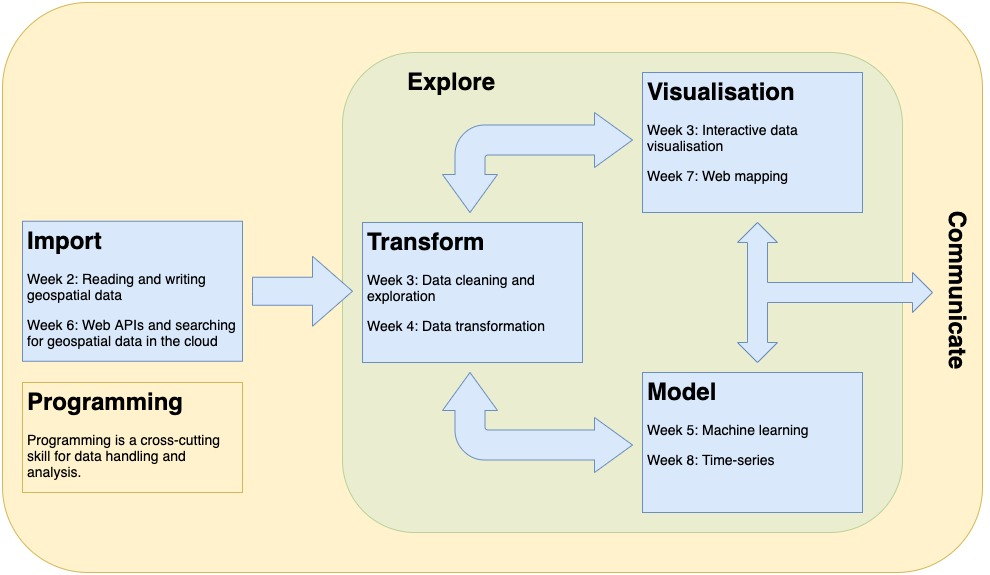

coursebook
Welcome
This is the online course book for Advanced Spatial Analysis (3300) and Decisions from Data in Agriculture (3003).
There are rapid changes in data science and technology/sensors that are driving change across the environmental and agricultural sectors. This unit focuses on student learning through practical and applied laboratories, using Python, and collecting field data using uncrewed aerial vehicles (UAVs). Students will develop skills to manipulate, transform, analyse, and visualise big spatial and non-spatial data to provide solutions to the big landscape and agricultural questions.
This course will teach students foundational skills and knowledge required to implement spatial and non-spatial data analysis workflows programmatically, to handle and analyse “big” data, and to operate in cloud-based environments.
There are three overarching themes are:
Programming: analysis doesn’t scale without code, programming skills are required to use many software packages and tools for spatial data analysis.
Big data: various sensors are generating databases that are growing in size and variety. Increasingly specialist software and data formats are required to handle big data.
Cloud-based environments: it’s easier to move the question to the data than to make big data mobile. Data and computer processing are often located on remote computers - we need to know how to get there.
Unit structure
The course outline is loosely based on the stages of a data science workflow from Wickham and Grolemund (2022) with a focus on practical geospatial data wrangling and analysis skills relevant to each stage.

Computer labs
Two computer labs per week unless otherwise indicated in the schedule.
- One instructor-led lab.
- One self-guided lab.